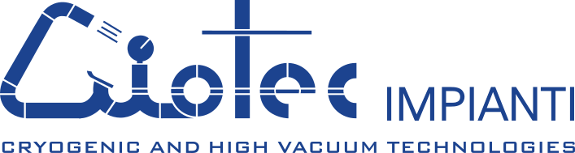

CISC
Collaborative Intelligence for Safety Critical Systems: an international training network for researchers at the crossroads of artificial intelligence, human factors and systems safety engineering. ARIA contributed as associated partner.
Safety engineering since 2004
We turn technical complexity into safe, reliable and compliant decisions: process risk, environment, reliability and human factors.
Our story
ARIA was founded in 2004 and, since 2007, has been a graduate company of I3P – the Innovative Business Incubator of the Politecnico di Torino. For over twenty years we have developed and applied innovative methodologies for industrial and environmental risk analysis, reliability and human factors.
Our work combines scientific rigour with field experience, fuelled by ongoing participation in national and international research projects that keep our expertise at the state of the art.
We combine independence of judgement and methodological rigour to deliver clear, defensible assessments truly oriented to decision-making.
Our values
Four principles guide every project.
Validated, traceable methods grounded in academic research and sector regulations.
We develop and apply new risk-analysis techniques born from research projects.
We integrate process, environment and the human factor into a unified view of risk.
Third-party, impartial assessments dedicated solely to the client's safety.
The journey
ARIA is founded, out of the research environment of the Politecnico di Torino.
Achievement of ISO 9001 certification issued by DNV.
ARIA becomes a graduate company of I3P – the Innovative Business Incubator of the Politecnico di Torino.
Ongoing participation in national and international research projects and consulting for the main industrial sectors.
What we do
Innovative risk-analysis methodologies applied to the process industry, the environment and human factors.
Risk analysis of complex technological systems: from hazard identification to decision support, using established and innovative methodologies.
Occupational health and safety in the workplace (Italian Legislative Decree 81/08 as amended): we identify and apply the regulatory obligations that protect people.
Fire risk assessment and preparation of the documentation required for the Fire Brigade to issue the Fire Prevention Certificate (CPI).
Drafting of the Internal Emergency Plan (PEI) and definition of emergency procedures.
Analysis of incidents, near misses and accidents using innovative analysis techniques (Fuzzy Logic).
Development and integration of Occupational Health and Safety Management Systems (ISO 45001).
Information, training and instruction of workers on risks and on prevention measures.
RAMS analysis of complex plants and technological systems, using traditional techniques and innovative approaches to maximise performance and safety throughout the life cycle.
Assessment of reliability and availability using traditional techniques (FMECA, FTA) and innovative ones (Markov chains, IDDA, Fuzzy Logic). The same techniques support maintenance optimisation (Reliability Centred Maintenance – RCM).
Safety Integrity Level of process plants (ISO 61511), operating machinery (IEC 62061) and the automotive sector (ISO 26262).
Built on company-specific information or with reference to the commercial databases of leading bodies (ESReDA, OREDA, AIChE, et al.).
Design of systems for collecting, storing and analysing plant maintenance data, supporting the development of reliability databases.
Combines logical-probabilistic modelling (a "dynamic" event tree) with phenomenological modelling of the system's physical response, for documented, justifiable decision support with an analysis of the alternatives and the risk involved.
We support the product towards compliance: from legislative and regulatory compliance and CE-marking support to risk assessment and the drafting of the technical file.
We identify the directives and regulations applicable to the product according to its target markets — CE marking for Europe, FDA or UL requirements for the United States — defining the project's legal compass before investing in production.
We verify compliance with directives on hazardous substances and environmental impact — RoHS, REACH, SCIP and the packaging regulation — for products that remain compliant across the whole supply chain.
We apply standard methodologies — FMEA (Failure Mode and Effects Analysis) and ISO 12100 for machinery — to identify mechanical, electrical, thermal and chemical hazards and correct them in advance.
We draft the Technical File (drawings, calculations, test reports), user manuals, warnings and hazard labels, and support the preparation of the Declaration of Conformity through which the manufacturer assumes legal responsibility for the product.
Support in assessing the risks and ignition sources of products intended for use in potentially explosive atmospheres — flammable gases, vapours, mists and combustible dusts. We assist before notified bodies in developing and filing the technical file and in issuing the ATEX EU Declaration of Conformity.
Management systems for quality, environment, safety and workers' health, built with a risk-based approach and integrated into business processes.
Initial analysis of safety and/or environmental obligations, to define the status quo from which to begin developing the management system.
Analysis of accidents, near misses and anomalies to support risk assessment and the optimisation of production and maintenance processes.
Drafting of the documents that form the backbone of the system (manual, procedures and operating instructions), in close collaboration with the client company.
Interim audits to verify the state of implementation, pre-audits for certification purposes, and participation in audits by the certification body and/or supervisory authorities.
Specific training for the management team, the operational structure, internal auditors and staff.
Support in introducing the risk-based approach (ISO 9001 and ISO 14001, LCP and LCA) and integration of management systems to optimise company resources.
Worker information, education and on-site training: tailored programmes to transfer skills and a culture of safety at every corporate level.
Courses on CE marking, product directives and regulations: risk assessment (ISO 12100), technical file and declaration of conformity.
Waste management, atmospheric emissions and the transport of dangerous goods (ADR Agreement).
Collaborative programmes for groups of workers that integrate risk perception into assessments.
Trainers holding the qualification and three-yearly refresher requirements of the Italian Interministerial Decree of 6 March 2013 (art. 6(8)(m-bis), Legislative Decree 81/2008), in line with the State-Regions Agreement on training.
Support in designing tailored programmes and in accessing funding (e.g. Fondimpresa).
Technological risk analysis integrated with human and organisational factors, and the optimisation of operating procedures for safety.
Development of safety-oriented operating procedures, creating the conditions for operators and work teams to contribute actively to safety.
Assessment of technological process risk integrated with the analysis of human and organisational factors, extended also to workplaces.
Development of tools for collecting, analysing and using plant operational experience: unsafe acts and conditions, and the transfer of information between shifts (shift handovers).
Projects and research
We take part in national and international research projects on safety, risk analysis, the environment and human factors.
Collaborative Intelligence for Safety Critical Systems: an international training network for researchers at the crossroads of artificial intelligence, human factors and systems safety engineering. ARIA contributed as associated partner.
Food-safety management along the supply chain with advanced tools: innovative sensors and real-time data-sharing networks to extend control across the entire chain.
A safer food-delivery service during and after the COVID-19 pandemic. ARIA developed HACCP procedures integrated with human factors and a prototype tamper-proof box with a smart lock.
Integration of human and managerial factors into traditional risk-analysis methodologies. ARIA hosted a researcher for three years, focused on human factors in ATEX procedures.
Geopolymer binders as an alternative to Portland cement. ARIA carried out preliminary Life Cycle Analysis studies for the technical and economic assessment of the product.
High-durability self-healing cementitious materials without compromising their structural properties. ARIA provided analysis in support of the development work and a preliminary Life Cycle Analysis.
Sectors
We support organisations in the sectors most exposed to industrial and environmental risk.
Scientific publications
Articles in international journals and conference proceedings on risk analysis, safety, human factors and land use planning. A selection:
Full list (over 40 publications from 2006 onward) at www.aria.srl/en/publications
What's new
The operational tool developed by ARIA and ICIM Consulting for compliance in the management of packaging waste across Europe. Pending a European Regulation harmonising the application of EU Directive 2018/852, the Vademecum describes, through simple and intuitive navigation, the obligations to be met in each European country: packaging labelling requirements, membership of eco-organisations and declarations of the quantities of packaging placed on each market.
environmentallabellingpackaging.comClients
Leading industrial players and institutions in the chemical, pharmaceutical, energy, mechanical and food sectors rely on ARIA for risk analysis and management.
 Ahlstrom
Ahlstrom Applus Velosi
Applus Velosi Arexons
Arexons
Criotec Ecomacchine
Ecomacchine Erigo
Erigo FATA Engineering
FATA Engineering Gae Engineering
Gae Engineering ICIM Consulting
ICIM Consulting ANIMA
ANIMA LYS Environment
LYS Environment Novartis
Novartis Polynt
Polynt Rana Group
Rana Group SAES Getters
SAES Getters SEPI Ambiente
SEPI Ambiente SICOR / TAPI
SICOR / TAPI Vishay
Vishay VOMM
VOMMIndustrial and Environmental Risk Analysis
VAT no. / Tax code 08820880014 — Turin Companies Register, REA TO-1002914 — Share capital € 10,000.00 fully paid-up
I3P graduate company – Politecnico di Torino · ISO 9001 certification issued by DNV since 2005